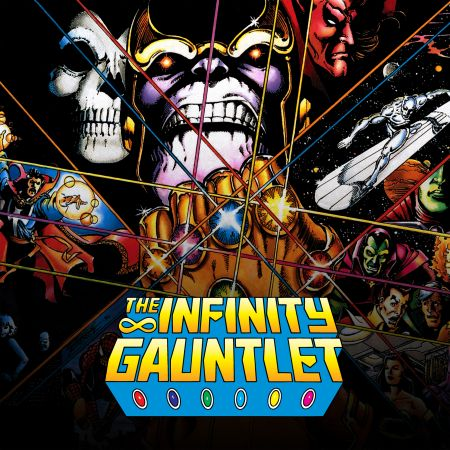
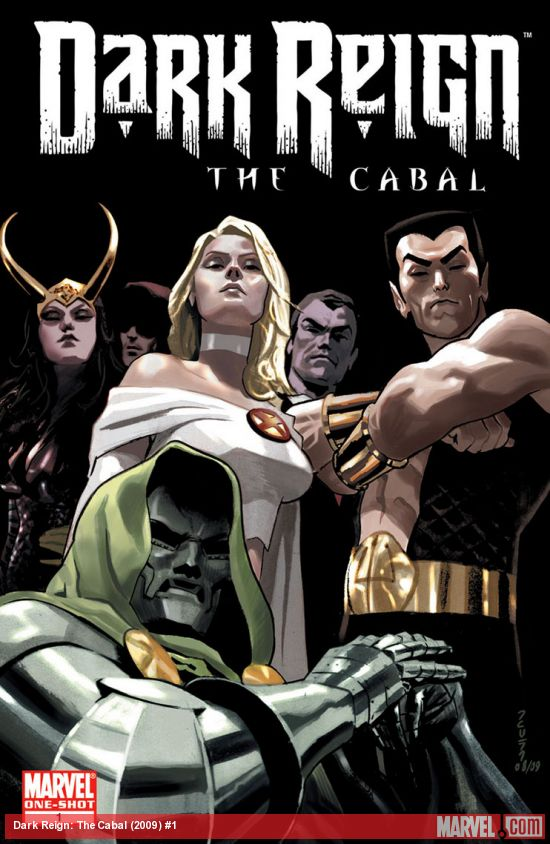
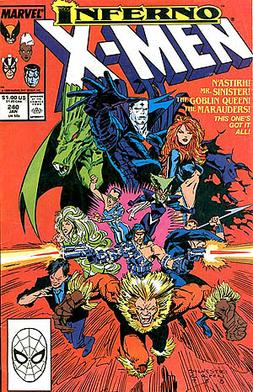
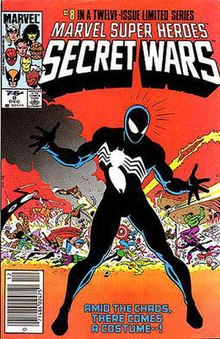

The Main Events
A brief introduction to some of the best and biggest storylines in all of Marvel
This story sees Thanos rising from a villain for cosmic characters, like Captain Marvel, to becoming one of the most powerful beings in the Marvel Universe. He comes into possession of all six Infinity Stones and uses them to erase half the life in the universe. Adam Warlock then reunites the remaining heroes to stop him. This story raised the stakes significantly and left a huge mark on the Marvel Universe.
Click Here to learn more about Infinity Gauntlet! Assuming control of Earth, Osborn creates a SHIELD replacement and becomes a high-profile hero, an Iron-Man substitute known as the Iron Patriot. He then forms the Dark Avengers, creates HAMMER, and launches a campaign against the Secret Avengers. Dark Reign features multiple Osborn-centric storylines that perfectly portray his evil genius. Indeed, his actions caused numerous problems for Earth's mightiest heroes.
Click Here to learn more about Dark Reign! Inferno was one of the most significant moments in X-Men history. It featured the corruption of Illyana Rasputin's soul, turning her into the Darkchilde, and the rise and fall of the Goblin Queen, AKA Madelyne Prior. In many ways, Inferno was the X-Men's first genuine crossover, featuring multiple titles and storylines happening simultaneously and leaving lasting repercussions, some of which are still being felt.
Click here to learn more about Inferno! What's a list of storylines without one of the most famous storylines in Marvel history? It featured the destruction of multiple alternate universes, with the Earth in each one combining into the patchwork planet Battleworld. It also includes a version of Doctor Doom that goes by God Emperor Doom, which is just incredible. I don't want to spoil anything but some very crazy things happen as a result of this storyline. For all intents and purposes, Secret Wars was a soft reboot of the Marvel Universe, and what better way to do it than via a battle royale parallel universe?
Click here to learn more about Secret Wars! 